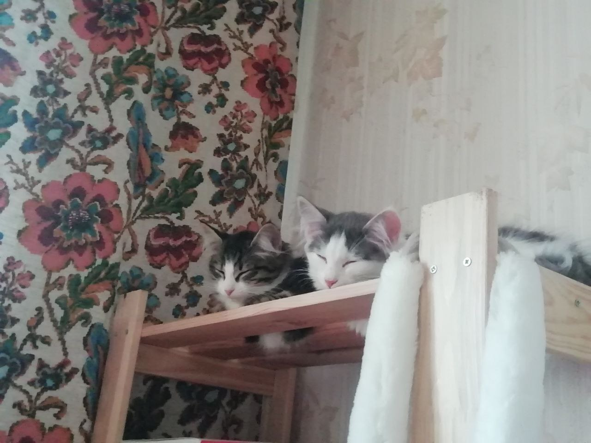

Это не мои малышки, а просто котик из интернета

А сейчас покажу малышек. Слева Ликси, справа Мисо.
У Мисо очень красивые стрелки на глазах. Она делает вид, что ей никто не нравится, но на самом деле она очень любит ласку.
Мисо любит:
Ликси ведет себя как старшая, присматривает за Мисо. Она очень любит поесть и смешно квакает, когда я чихаю.
Ликси любит: